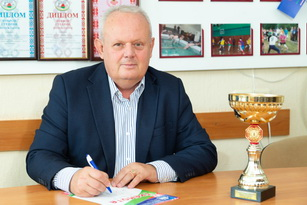

Спортивный клуб БГУИР
Спортивный клуб БГУИР создан в 1968 году и осуществляет деятельность по развитию физической культуры и спорта среди студентов, аспирантов, преподавателей, сотрудников университета.
Спортивный клуб возглавляет:
 Рытьков Владимир АнатольевичСпортивный клуб находится в аудитории 17 корпус 3,
- телефон 80-77
- Электронный адрес: sportclub@bsuir.by
- Группа
Спортивный клуб работает в тесном контакте с кафедрой физического воспитания и спортивным активом из числа студентов и сотрудников университета.
В 2021-2022 учебном году решением деканатов назначены спорторгами факультетов:
| ФКП | Власкин Валентин | гр.010101 | +375298444670 |
|---|---|---|---|
| ФИТиУ | Хусаинов Денис | гр.920604 | +375336146953 |
| ВФ | Колбаско Марек | гр.034201 | |
| ФРЭ | Паршаков Евгений | гр.940301 | +375259000619 |
| ФКСиС | Бурбицкая Яна | гр.051002 | +375333180356 |
| ФИБ | Левчук Роман | гр.163001 | +375336480288 |
| ИЭФ | Дичковская Екатерина | гр.274004 | +375291052706 |
Студенты и сотрудники университета имеют возможность заниматься по своим интересам:
- в клубе настольного тенниса (с/з к. 5);
- в группах любителей футбола, мини-футбола, баскетбола, волейбола (мужчины и женщины), легкой атлетики, настольного тенниса, тяжелой атлетики и дартса, руководителями которых являются сами, наиболее подготовленные, студенты;
- в плавательном бассейне, как на учебно-тренировочных занятиях, так и по абонементам, приобретенным в СОЦ (каб. 1-6к.).
В соответствии с приказом министра образования РБ основной задачей спортивного клуба высшего учебного заведения является организация и проведение массовой физкультурно-спортивной работы со студентами и работниками учебного заведения.
Спортивный клуб организует и проводит:
- Финальные соревнования соревнования в круглогодичных Спартакиадах среди факультетов по различным видам спорта.
- Соревнования по различным видам спорта Спартакиады «Бодрость и здоровье» среди сотрудников и преподавателей в дни зимних каникул.
- Спортивно-массовые мероприятия.
- В воскресные дни мероприятия соревновательного характера, направленные на физическое развитие обучающихся.
- Товарищеские турниры по игровым видам спорта (волейбол, мини-футбол, баскетбол, футбол, бадминтон) среди сборных команд факультетов и отдельных курсов.
- Студенческие туристические слёты.
- Спортивные праздники, посвящённые знаменательным датам и событиям.
- Смотры-конкурсы на лучшую постановку и проведение спортивно-массовой работы на факультетах и в подразделениях университета.
- Агитацию и пропаганду здорового образа жизни среди студентов и сотрудников.
Спортивный клуб совместно с кафедрой физического воспитания организует формирование, подготовку и участие сборных команд по видам спорта БГУИР в:
- круглогодичной Республиканской универсиаде студентов;
- республиканских туристских слётах студентов;
- соревнованиях туристско-спортивных слётов трудовых коллективов Советского района г. Минска;
- соревнованиях Cпартакиады ВУЗов г. Минска среди сотрудников системы Министерства образования;
- товарищеских турнирах по игровым видам спорта среди студентов ВУЗов г. Минска;
- спортивных праздниках, организуемых в Советском районе и городе Минске, посвящённых знаменательным датам: День Независимости Республики Беларусь, День города Минска, День работников физической культуры и спорта и др.;
- ежегодном Минском международном легкоатлетическом марафоне;
- спортивно-оздоровительных праздниках «Минская лыжня».
Всем студентам и сотрудникам университета, стремящихся к укреплению своего здоровья, спортивный клуб поможет найти интересное занятие. Приходите, мы ждем вас!